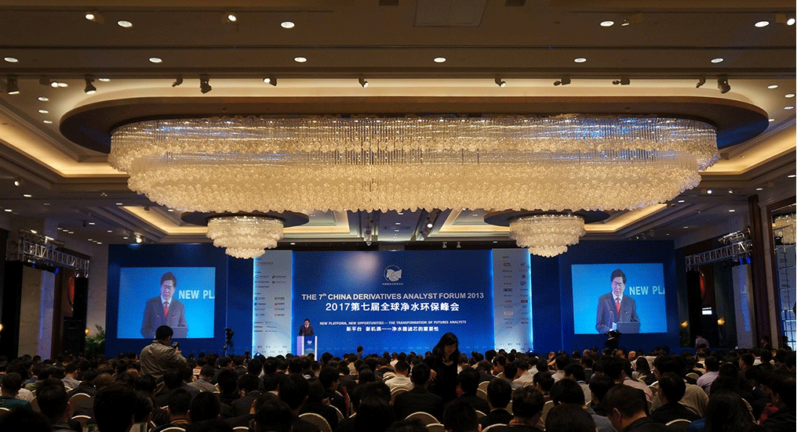

2016年，“新零售”这一概念横空出世，在各行各业开花结果，净水行业同样在紧跟时代步伐。但是，在尚属于“新生代”的净水市场中，存在大小数百个品牌，鱼龙混杂，消费者体验大打折扣，对市场健康发展构成一定威胁。如何维护净水产业生态健康、适应“新零售”下的消费模式，成为本次峰会的主要议题。
据了解，除了诸位行业专家的观点分享，峰会还对国内为行业做出突出贡献的优秀净水品牌进行了表彰。其中，甘露霖凭借自身过硬的技术实力、名列前茅的市场份额以及在净水领域完成的突破、做出的创举获得“净水行业品牌影响力奖”，赢得了奖项众评委的一致认可。
新零售让消费回归“体验时代”，净水行业犹是如此。由于净水器的特性，净水器从客户售前体验、下单，到配送、安装、售后服务，加上日后持续的使用，无时不刻不在强调“体验”的重要性。
新零售让消费回归“体验时代”，净水行业犹是如此。由于净水器的特性，净水器从客户售前体验、下单，到配送、安装、售后服务，加上日后持续的使用，无时不刻不在强调“体验”的重要性。
他表示，净水的关键部分是膜芯，要生产安全健康的水，膜芯起到了重要的作用，微滤、超滤、反渗透等是膜的核心技术，也是目前解决水污染问题最有效的方法，消费者在购买净水器产品的同时也更看重膜心的质量。生产更健康的水不仅是净水企业的责任，也是膜行业的责任。水的安全也好、健康也好，主要靠膜。所以，生产出来的水又安全又健康，这是净水行业的方向，也是膜行业的方向。
实际上，不论是净水企业还是膜行业，都是净水行业极其重要的组成部分，膜质量决定了净水器质量，也决定着用户体验。在“体验为王”回归的时代，两者“怀揣匠心”，必然引发积极的连锁效应。